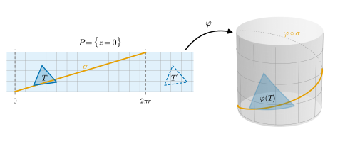

7.2 등거리사상
이 절의 목표
- 등거리사상과 국소 등거리사상을 정의하고, 국소 등거리사상이 곡선의 길이와 각을 보존함을 보일 수 있다.
- “\(E, F, G\)를 보존하는 것”과 “국소 등거리사상인 것”이 같다는 판정 정리를 증명하고 계산에 쓸 수 있다.
- 원기둥이 평면과 국소적으로 등거리이지만 등거리는 아님을 설명하고, 등거리사상이 \(\R^3\)의 거리를 보존하지 않을 수 있음을 예로 보일 수 있다.
선수 지식
동기
7.1절에서 곡면 위의 길이와 각이 제1기본형식만으로 정해짐을 보았다. 그리고 원기둥 \(\mathbf{x}(u, v) = (r\cos u, r\sin u, v)\)와 평면 \((ru, v, 0)\)이 같은 계수 \(E = r^2\), \(F = 0\), \(G = 1\)을 가진다는 것을 보았다(예 7.1.4). 종이 한 장을 둥글게 말면 원기둥의 일부가 된다. 말아도 종이 위에 그린 선의 길이는 변하지 않고, 두 선이 만나는 각도 그대로다. 종이를 늘이거나 찢지 않았기 때문이다. 예 4.2.8(b)에서 나선의 길이를 “원기둥을 펼쳐서” 구하고, 이 사실은 7장에서 증명한다고 미루어 두었다.
이 절의 질문은 두 가지다. “늘이지 않고 구부린다”를 어떻게 정확히 말할 것인가? 그리고 두 곡면이 그런 관계에 있음을 어떻게 판정할 것인가? 첫째 답은 “미분이 제1기본형식을 보존하는 사상”이고, 둘째 답은 “\(E, F, G\)가 같은 매개화가 있는가”다.

등거리사상
이 절에서 \(S_1, S_2, S_3\)은 정칙곡면이다. 정칙곡면의 열린 부분집합도 정칙곡면이므로(연습 6.1.3(d)), 아래 정의는 열린 부분집합 사이의 사상에도 그대로 쓴다.
정의 7.2.1 (등거리사상, isometry). 미분동형사상 \(\varphi\colon S_1 \to S_2\)(정의 6.3.11)가 모든 \(p \in S_1\)과 모든 \(w_1, w_2 \in T_pS_1\)에 대하여
를 만족하면 \(\varphi\)를 등거리사상(isometry)이라 하고, \(S_1\)과 \(S_2\)가 등거리라 한다.
편극 등식(정의 7.1.1 뒤)에 의해 (7.2.1)은 “모든 \(w \in T_pS_1\)에서 \(\mathrm{I}_{\varphi(p)}(d\varphi_p(w)) = \mathrm{I}_p(w)\)”와 같다. 한쪽 방향은 \(w_1 = w_2 = w\)로 두면 되고, 반대 방향은 \(d\varphi_p\)가 선형이므로 \(2\inner{d\varphi_p w_1}{d\varphi_p w_2} = \mathrm{I}(d\varphi_p(w_1 + w_2)) - \mathrm{I}(d\varphi_p w_1) - \mathrm{I}(d\varphi_p w_2) = \mathrm{I}(w_1 + w_2) - \mathrm{I}(w_1) - \mathrm{I}(w_2) = 2\inner{w_1}{w_2}\)이다. 즉 등거리사상은 “미분이 제1기본형식을 보존하는 미분동형사상”이다.
예 7.2.2 (직교변환과 평행이동의 제한). \(A\)가 \(3 \times 3\) 직교행렬(정의 5.4.1)이고 \(c \in \R^3\)이며 \(\Phi(p) = Ap + c\)가 \(S_1\)을 \(S_2\) 위로 보낸다고 하자. 그러면 \(\varphi = \Phi|_{S_1}\colon S_1 \to S_2\)는 등거리사상이다. \(\Phi\)는 \(\R^3\)의 미분동형사상(역사상 \(p \mapsto A^{\mathsf{T}}(p - c)\))이므로 \(\varphi\)와 \(\varphi^{-1} = \Phi^{-1}|_{S_2}\)는 매끄럽고(예 6.3.12(a)), 명제 6.4.4(a)에서 \(d\varphi_p(w) = Aw\)이며, 명제 5.4.2(a)에서 \(\inner{Aw_1}{Aw_2} = \inner{w_1}{w_2}\)이다. 예를 들면 다음과 같다.
- 구면 \(S^2(r)\)의 회전, 반사, 대척사상 \(p \mapsto -p\) (예 6.3.12(a)).
- 원기둥의 \(z\)축 둘레 회전과 \(z\)축 방향 평행이동. 기준 매개화로 쓰면 평행이동 \(p \mapsto p + (0, 0, c)\)는 \(\mathbf{x}(u, v) \mapsto \mathbf{x}(u, v + c)\)이다.
- 원환면의 \(z\)축 둘레 각 \(\alpha\) 회전 \(R_{z,\alpha}\). 성분을 계산하면 \(R_{z,\alpha}\big(\mathbf{x}(u, v)\big) = \mathbf{x}(u, v + \alpha)\)이다(삼각함수의 덧셈정리).
검증: verify/v-7-2-isometries.py
비예 7.2.3 (구부리지 않고 늘이는 사상). (a) 닮음. \(\lambda \gt 0\), \(\lambda \neq 1\)이면 \(\varphi(p) = \lambda p\)는 \(S^2(r)\)에서 \(S^2(\lambda r)\) 위로 가는 미분동형사상이지만 등거리사상이 아니다. \(d\varphi_p(w) = \lambda w\)이므로(예 6.4.6) \(\inner{d\varphi_p w_1}{d\varphi_p w_2} = \lambda^2\inner{w_1}{w_2}\)이다. 모양은 그대로지만 모든 길이가 \(\lambda\)배가 된다. 각은 보존된다. 이런 사상은 7.4절에서 다시 본다.
(b) 늘이기. 평면 \(\{z = 0\}\) 위의 \(\varphi(x, y, 0) = (2x, y, 0)\)은 미분동형사상이지만 \(d\varphi_p(e_1) = 2e_1\)이므로 \(e_1\) 방향의 길이를 두 배로 늘인다. 각도 보존하지 않는다. \(e_1 + e_2\)와 \(e_1\) 사이의 각 \(\pi/4\)가 \(2e_1 + e_2\)와 \(2e_1\) 사이의 각 \(\arctan(1/2)\)이 된다.
검증: verify/v-7-2-isometries.py
그림 7.2.1의 \(\varphi\)는 단사가 아니므로 미분동형사상이 아니고, 따라서 정의 7.2.1의 등거리사상이 아니다. 그래도 각 점에서 미분은 제1기본형식을 보존한다. 이 성질에 이름을 붙이자.
정의 7.2.4 (국소 등거리사상, local isometry). \(O \subseteq S_1\)이 열린집합이고 \(\varphi\colon O \to S_2\)가 매끄러운 사상이라 하자. 모든 \(p \in O\)와 모든 \(w_1, w_2 \in T_pS_1\)에 대하여 (7.2.1)이 성립하면 \(\varphi\)를 국소 등거리사상(local isometry)이라 한다. 모든 \(p \in S_1\)에 대하여 \(p\)를 포함하는 열린집합 \(O \subseteq S_1\)과 국소 등거리사상 \(O \to S_2\)가 있으면 \(S_1\)이 \(S_2\)와 국소적으로 등거리라 한다.
“국소적으로 등거리”는 대칭인 관계가 아니다. 그러나 이 절의 예에서는 양쪽 방향이 모두 성립한다(예 7.2.9). 국소 등거리사상이라는 이름에 맞게, 그것은 각 점 근처에서 정말 등거리사상이다.
명제 7.2.5 (국소 등거리사상의 성질).
- (a) \(\varphi\colon O \to S_2\)가 국소 등거리사상이면 모든 \(p \in O\)에서 \(d\varphi_p\)는 동형사상이다. 또 \(p\)를 포함하는 열린집합 \(O_p \subseteq O\)가 있어서 \(\varphi(O_p)\)는 \(S_2\)에서 열려 있고 \(\varphi|_{O_p}\colon O_p \to \varphi(O_p)\)는 등거리사상이다.
- (b) 등거리사상은 국소 등거리사상이다. 거꾸로 전단사인 국소 등거리사상 \(\varphi\colon S_1 \to S_2\)는 등거리사상이다.
- (c) 국소 등거리사상의 합성은 국소 등거리사상이고, 등거리사상의 역사상과 합성은 등거리사상이다.
증명. (a) \(d\varphi_p(w) = 0\)이면 (7.2.1)에서 \(\abs{w}^2 = \abs{d\varphi_p(w)}^2 = 0\)이므로 \(w = 0\)이다. 즉 \(d\varphi_p\)는 단사이고, 두 접평면이 모두 2차원이므로 동형사상이다(따름정리 1.2.10(a)). 정리 6.4.11에 의해 \(p\)를 포함하는 열린집합 \(O_p\)가 있어서 \(\varphi(O_p)\)는 \(S_2\)에서 열려 있고, \(\varphi|_{O_p}\)는 그 위로의 전단사이며 역사상이 매끄럽다. 곧 \(\varphi|_{O_p}\)는 정칙곡면 \(O_p\)와 \(\varphi(O_p)\) 사이의 미분동형사상이고, (7.2.1)을 만족하므로 등거리사상이다.
(b) 첫 주장은 정의에서 바로 나온다(미분동형사상은 매끄럽다). 전단사인 국소 등거리사상은 (a)에 의해 전단사인 국소 미분동형사상이므로 미분동형사상이다(연습 6.4.3(c)). 따라서 등거리사상이다.
(c) 연쇄법칙(정리 6.4.8)에서 \(d(\psi \circ \varphi)_p = d\psi_{\varphi(p)} \circ d\varphi_p\)이고, 내적을 보존하는 선형사상의 합성은 내적을 보존한다. \(\varphi\)가 등거리사상이면 \(d(\varphi^{-1})_{\varphi(p)} = (d\varphi_p)^{-1}\)이고(따름정리 6.4.9), 내적을 보존하는 선형 동형사상의 역사상도 내적을 보존한다((7.2.1)에 \(w_i = (d\varphi_p)^{-1}w_i'\)를 넣는다). 미분동형사상의 역사상과 합성은 미분동형사상이다(연습 6.3.6).
“국소 등거리사상”이 기하적으로 무엇을 보존하는지 확인하자. 동기의 종이 비유가 말한 것은 길이와 각이었다.
명제 7.2.6 (길이와 각의 보존). \(\varphi\colon O \to S_2\)가 국소 등거리사상이고 \(\alpha\colon I \to O\)가 곡선이면, 모든 \([t_1, t_2] \subseteq I\)에서 \(L\big((\varphi \circ \alpha)|_{[t_1, t_2]}\big) = L\big(\alpha|_{[t_1, t_2]}\big)\)이다. 또 \(O\) 안의 두 정칙곡선 \(\alpha, \beta\)가 \(p\)에서 각 \(\vartheta\)를 이루면 \(\varphi \circ \alpha\), \(\varphi \circ \beta\)는 \(\varphi(p)\)에서 같은 각 \(\vartheta\)를 이루는 정칙곡선이다.
증명. \(t \in I\)에서 곡선 \(s \mapsto \alpha(t + s)\)에 정의 6.4.1을 쓰면 \((\varphi \circ \alpha)'(t) = d\varphi_{\alpha(t)}(\alpha'(t))\)이다. (7.2.1)에서 \(\abs{(\varphi \circ \alpha)'(t)} = \abs{\alpha'(t)}\)이므로 두 길이의 피적분함수((4.2.4))가 같다. 특히 \(\alpha\)가 정칙이면 \(\varphi \circ \alpha\)도 정칙이다. 각은 정의 7.1.11에서 속도의 내적과 길이로 정해지고, \(d\varphi_p\)가 둘 다 보존하므로 같다.
\(E, F, G\)에 의한 판정
정의 (7.2.1)을 직접 확인하려면 모든 접벡터의 미분을 알아야 한다. 매개화를 쓰면 확인할 것이 세 함수로 줄어든다. 먼저 좌표곡선의 속도가 \(d\varphi\)로 어떻게 옮겨 가는지 보자.
정리 7.2.7 (\(E, F, G\)에 의한 국소 등거리의 판정). \(O \subseteq S_1\)이 열린집합이고 \(\varphi\colon O \to S_2\)가 매끄러운 사상이라 하자. \(\mathbf{x}(U) \subseteq O\)인 매개화 \(\mathbf{x}\colon U \to S_1\)에 대하여 \(\mathbf{y} = \varphi \circ \mathbf{x}\colon U \to \R^3\)으로 두고, \(\mathbf{x}\)의 계수를 \(E, F, G\)라 하자.
- (a) \(\mathbf{y}\)는 매끄럽고, 모든 \(q \in U\)에서 \(\mathbf{y}_u(q) = d\varphi_{\mathbf{x}(q)}\big(\mathbf{x}_u(q)\big)\), \(\mathbf{y}_v(q) = d\varphi_{\mathbf{x}(q)}\big(\mathbf{x}_v(q)\big)\)이다.
- (b) 다음 세 조건은 서로 동치다. (i) \(\varphi\)는 국소 등거리사상이다. (ii) 모든 \(p \in O\)에 대하여 \(p \in \mathbf{x}(U) \subseteq O\)인 매개화 \(\mathbf{x}\)가 있어서 \(U\)에서
이다. (iii) \(\mathbf{x}(U) \subseteq O\)인 모든 매개화 \(\mathbf{x}\)에 대하여 (7.2.2)가 성립한다.
이 정리가 말하는 것. \(\varphi\)로 옮긴 좌표 격자의 환산표가 원래의 환산표와 같으면 \(\varphi\)는 국소 등거리사상이고, 그 역도 참이다. 확인할 곳은 한 점 근처마다 매개화 하나면 충분하다.
증명 아이디어: 좌표곡선 \(t \mapsto \mathbf{x}(q + te_1)\)을 \(\varphi\)로 보낸 곡선이 \(t \mapsto \mathbf{y}(q + te_1)\)이므로, 미분의 정의에서 \(d\varphi(\mathbf{x}_u) = \mathbf{y}_u\)이다. 그러면 \(d\varphi\)가 내적을 보존하는 것과 \(\mathbf{y}_u, \mathbf{y}_v\)의 내적이 \(\mathbf{x}_u, \mathbf{x}_v\)의 내적과 같은 것은 같은 말이다.
증명. (a) \(\mathbf{y} = \varphi \circ \mathbf{x}\)는 명제 6.3.10(a)에 의해 매끄럽다. \(q \in U\)를 고정하자. \(U\)가 열린집합이므로 작은 \(\varepsilon \gt 0\)에서 \(c(t) = \mathbf{x}(q + te_1)\) (\(\abs{t} \lt \varepsilon\))은 \(O\) 위의 곡선이고, \(c(0) = \mathbf{x}(q)\), \(c'(0) = \mathbf{x}_u(q)\)이다. 정의 6.4.1에서 \(d\varphi_{\mathbf{x}(q)}(\mathbf{x}_u(q)) = (\varphi \circ c)'(0) = \tfrac{d}{dt}\big|_{t = 0}\mathbf{y}(q + te_1) = \mathbf{y}_u(q)\)이다. \(\mathbf{y}_v\)도 \(c(t) = \mathbf{x}(q + te_2)\)로 같다.
(b) (i) ⇒ (iii): \(\mathbf{x}(U) \subseteq O\)인 매개화 \(\mathbf{x}\)와 \(q \in U\)에 대해 (a)와 (7.2.1)에서 \(\inner{\mathbf{y}_u}{\mathbf{y}_u} = \inner{d\varphi(\mathbf{x}_u)}{d\varphi(\mathbf{x}_u)} = \inner{\mathbf{x}_u}{\mathbf{x}_u} = E\)이고, \(F\), \(G\)도 같다.
(iii) ⇒ (ii): \(p \in O\)이면 \(p\) 근처의 매개화 \(\mathbf{x}\colon U \to S_1\)을 잡고 정의역을 열린집합 \(\mathbf{x}^{-1}(O \cap \mathbf{x}(U))\)로 줄이면 \(p \in \mathbf{x}(U) \subseteq O\)인 매개화를 얻는다(정의 6.3.5 뒤의 설명). (iii)에 의해 이 \(\mathbf{x}\)가 (ii)의 조건을 만족한다.
(ii) ⇒ (i): \(p \in O\)와 (ii)의 매개화 \(\mathbf{x}\)를 잡고 \(q = \mathbf{x}^{-1}(p)\)라 하자. \(w \in T_pS_1\)을 \(w = a\,\mathbf{x}_u(q) + b\,\mathbf{x}_v(q)\)로 쓰면, \(d\varphi_p\)가 선형이므로 (a)에서 \(d\varphi_p(w) = a\,\mathbf{y}_u(q) + b\,\mathbf{y}_v(q)\)이다. 따라서
\[ \abs{d\varphi_p(w)}^2 = a^2\inner{\mathbf{y}_u}{\mathbf{y}_u} + 2ab\inner{\mathbf{y}_u}{\mathbf{y}_v} + b^2\inner{\mathbf{y}_v}{\mathbf{y}_v} = Ea^2 + 2Fab + Gb^2 = \abs{w}^2 \]
이다(마지막 등호는 (7.1.1)). 곧 \(\mathrm{I}_{\varphi(p)}(d\varphi_p(w)) = \mathrm{I}_p(w)\)이고, 정의 뒤의 편극 논법에서 (7.2.1)이 성립한다. \(p\)는 \(O\)의 임의의 점이므로 \(\varphi\)는 국소 등거리사상이다.
\(\mathbf{y} = \varphi \circ \mathbf{x}\)가 \(S_2\)의 매개화일 필요는 없다. (7.2.2)의 좌변은 매끄러운 사상 \(\mathbf{y}\)의 편미분만으로 계산한다. 그러나 \(\mathbf{y}\)가 처음부터 매개화로 주어져 있으면 판정은 “두 매개화의 계수를 비교하는 것”이 된다.
따름정리 7.2.8 (같은 계수를 갖는 매개화).
- (a) \(\mathbf{x}\colon U \to S_1\)과 \(\mathbf{y}\colon U \to S_2\)가 같은 정의역을 갖는 매개화이고 \(U\)에서 \(E_1 = E_2\), \(F_1 = F_2\), \(G_1 = G_2\)이면, \(\psi = \mathbf{y} \circ \mathbf{x}^{-1}\colon \mathbf{x}(U) \to \mathbf{y}(U)\)는 등거리사상이다.
- (b) 거꾸로 \(\varphi\colon S_1 \to S_2\)가 등거리사상이고 \(\mathbf{x}\colon U \to S_1\)이 매개화이면 \(\varphi \circ \mathbf{x}\)는 \(S_2\)의 매개화이고, 그 계수는 \(\mathbf{x}\)의 계수와 같다.
증명. (a) \(\mathbf{x}(U)\)와 \(\mathbf{y}(U)\)는 정칙곡면의 열린 부분집합이므로 정칙곡면이다. 매개화는 그 상 위로의 미분동형사상이므로(예 6.3.12(b)) \(\psi\)는 미분동형사상의 합성, 곧 미분동형사상이다(연습 6.3.6). \(\psi \circ \mathbf{x} = \mathbf{y}\)이고 가정에서 (7.2.2)가 \(U\) 전체에서 성립하므로, 정리 7.2.7((ii) ⇒ (i), 모든 점에서 같은 \(\mathbf{x}\)를 쓴다)에 의해 \(\psi\)는 국소 등거리사상이다. 미분동형사상이므로 등거리사상이다.
(b) \(\mathbf{z} = \varphi \circ \mathbf{x}\)는 매끄럽다. \(\varphi\)는 위상동형사상이므로 \(\mathbf{z}\)는 \(U\)에서 \(S_2\)의 열린집합 \(\varphi(\mathbf{x}(U))\) 위로의 위상동형사상이고, 부분공간 위상의 정의에서 \(\R^3\)의 열린집합 \(V\)가 있어 \(\varphi(\mathbf{x}(U)) = V \cap S_2\)이다. 정리 7.2.7(a)에서 \(D\mathbf{z}(q) = \big(d\varphi(\mathbf{x}_u)\ \big|\ d\varphi(\mathbf{x}_v)\big)\)이고, \(d\varphi_p\)가 동형사상이므로 두 열은 일차독립이다. 따라서 \(\mathbf{z}\)는 매개화의 세 조건을 만족한다. 계수가 같다는 것은 정리 7.2.7((i) ⇒ (iii))이다.
원기둥과 평면
이제 동기의 종이 말기를 정리로 확인한다. 사상은 연습 6.5.4에서 국소 미분동형사상임을 보인 것이다.
예 7.2.9 (평면을 원기둥에 감기). 평면 \(P = \{z = 0\}\)에서 원기둥 \(C_r = \{x^2 + y^2 = r^2\}\)로 가는 사상
는 \(\R^3\)의 매끄러운 사상의 제한이고 값이 \(C_r\)에 있으므로 매끄럽다(예 6.3.12(a)). 평면의 매개화 \(\iota(u, v) = (u, v, 0)\)은 \(P\) 전체를 덮고 계수가 \(E = 1\), \(F = 0\), \(G = 1\)이다(예 7.1.8). \(\mathbf{y} = \varphi \circ \iota\)를 계산하면
\[ \begin{aligned} \mathbf{y}(u, v) &= \big(r\cos(u/r),\ r\sin(u/r),\ v\big),\\ \mathbf{y}_u &= \big(-\sin(u/r),\ \cos(u/r),\ 0\big), \qquad \mathbf{y}_v = (0, 0, 1) \end{aligned} \]
이므로 \(\inner{\mathbf{y}_u}{\mathbf{y}_u} = \sin^2(u/r) + \cos^2(u/r) = 1\), \(\inner{\mathbf{y}_u}{\mathbf{y}_v} = 0\), \(\inner{\mathbf{y}_v}{\mathbf{y}_v} = 1\)이다. 정리 7.2.7((ii) ⇒ (i))에 의해 \(\varphi\)는 국소 등거리사상이다. 여기서 네 가지를 읽을 수 있다.
- 등거리사상은 아니다. \(\varphi(x + 2\pi r, y, 0) = \varphi(x, y, 0)\)이므로 단사가 아니다. 띠 \(P_0 = \{(x, y, 0) : 0 \lt x \lt 2\pi r\}\)로 제한하면 \(\varphi|_{P_0}(x, y, 0) = \mathbf{x}(x/r, y)\)(\(\mathbf{x}\)는 원기둥의 기준 매개화, 예 6.5.7)이므로 \(\varphi|_{P_0}\)는 \(C_r\)에서 직선 \(\{(r, 0, z)\}\)을 뺀 부분 위로의 전단사이고, 명제 7.2.5(b)에 의해 등거리사상이다. 이것은 예 7.1.4의 두 매개화 \((ru, v, 0)\)과 \(\mathbf{x}\)에 따름정리 7.2.8(a)를 쓴 것과 같은 사상이다.
- 원기둥은 평면과 국소적으로 등거리다. \(C_r\)의 점 \(p\)가 주어지면 \(a \in \R\)을 골라 \(p\)가 직선 \(\{(r\cos(a/r), r\sin(a/r), z)\}\) 위에 있지 않게 한다. 띠 \(P_a = \{a \lt x \lt a + 2\pi r\}\)에서 \(\varphi\)는 그 직선을 뺀 \(C_r\)의 열린 부분 위로의 등거리사상이고(위와 같은 이유), 그 역사상은 명제 7.2.5(c)에 의해 \(p\)의 근방에서 정의된 등거리사상이다. 반대로 평면은 \(\varphi\) 자신에 의해 원기둥과 국소적으로 등거리다.
- 나선의 길이. 평면의 선분 \(\sigma(t) = (rt, bt, 0)\)은 \(\varphi \circ \sigma(t) = (r\cos t,\ r\sin t,\ bt)\), 곧 기준 예제의 나선(\(a = r\))으로 간다. 명제 7.2.6에서 한 바퀴의 길이는 선분의 길이 \(\sqrt{(2\pi r)^2 + (2\pi b)^2} = 2\pi\sqrt{r^2 + b^2}\)이다. 예 4.2.8(b)에서 미루어 둔 “펼치기가 길이를 바꾸지 않는다”는 사실이 이것이다. 펼치기는 \(\varphi|_{P_0}\)의 역사상이다.
- 각도 보존된다. 평면의 두 직선이 이루는 각은 그 상인 두 나선(또는 수평 원, 세로선)이 이루는 각과 같다. 그림 7.2.1의 삼각형 \(T\)와 \(\varphi(T)\)는 변의 길이와 꼭짓점의 각이 모두 같다.
검증: verify/v-7-2-isometries.py
비예 7.2.10 (국소 미분동형사상이지만 국소 등거리사상이 아닌 사상). 예 6.4.12의 \(\psi(x, y, 0) = (e^x\cos y,\ e^x\sin y,\ 0)\)은 평면에서 평면으로 가는 국소 미분동형사상이다. \(\mathbf{y} = \psi \circ \iota = (e^u\cos v,\ e^u\sin v,\ 0)\)의 편미분은 \(\mathbf{y}_u = e^u(\cos v, \sin v, 0)\), \(\mathbf{y}_v = e^u(-\sin v, \cos v, 0)\)이므로 \(\inner{\mathbf{y}_u}{\mathbf{y}_u} = e^{2u}\), \(\inner{\mathbf{y}_u}{\mathbf{y}_v} = 0\), \(\inner{\mathbf{y}_v}{\mathbf{y}_v} = e^{2u}\)이다. \(\iota\)의 계수는 \((1, 0, 1)\)이므로 (7.2.2)는 직선 \(u = 0\) 위에서만 성립한다. 어떤 열린집합도 이 직선에 포함되지 않으므로, 정리 7.2.7((i) ⇒ (iii))에 의해 \(\psi\)는 어떤 열린집합으로 제한해도 국소 등거리사상이 아니다. 대신 \(d\psi_p\)는 모든 길이를 똑같이 \(e^x\)배 한다. 각은 보존된다는 뜻이다. 이런 사상이 7.4절의 등각사상이다.
검증: verify/v-7-2-isometries.py
요약
- 등거리사상은 미분이 제1기본형식을 보존하는 미분동형사상이다. 미분동형사상을 요구하지 않고 각 점에서 보존만 요구하면 국소 등거리사상이다(정의 7.2.1, 정의 7.2.4).
- 국소 등거리사상은 각 점 근처에서 등거리사상이고(명제 7.2.5), 곡면 위 곡선의 길이와 각을 보존한다(명제 7.2.6).
- \(\varphi\)가 국소 등거리사상일 필요충분조건은 매개화 \(\mathbf{x}\)로 옮긴 \(\varphi \circ \mathbf{x}\)의 계수가 \(\mathbf{x}\)의 계수 \(E, F, G\)와 같은 것이다(정리 7.2.7). 같은 계수를 갖는 두 매개화는 등거리사상을 준다.
- 평면을 원기둥에 감는 사상은 국소 등거리사상이지만 단사가 아니다. 원기둥과 평면은 국소적으로 등거리이고, 나선의 길이는 펼친 선분의 길이다.
- 등거리사상은 \(\R^3\)의 거리를 보존하지 않을 수 있다. 보존하는 것은 곡면 위 곡선의 길이다.
다음 절에서는 제1기본형식으로 넓이를 잰다. 좌표 칸의 상은 거의 평행사변형이고 그 넓이는 \(\abs{\mathbf{x}_u \times \mathbf{x}_v}\,\Delta u\,\Delta v\)다. 이것을 적분한 값이 매개화에 무관한가? 답은 2장의 변수변환 공식에 있다.
연습문제
연습 7.2.1 ★ (나선면의 나사 운동) \(\alpha \in \R\)에 대해 \(\Phi_\alpha(x, y, z) = (x\cos\alpha - y\sin\alpha,\ x\sin\alpha + y\cos\alpha,\ z + \alpha)\)라 하자. \(\Phi_\alpha\)가 나선면 \(H\)(연습 7.1.6)를 \(H\) 위로 보내고 \(\Phi_\alpha|_H\)가 등거리사상임을 보여라. \(H\)의 매개화 \(\mathbf{y}\)로 쓰면 \(\Phi_\alpha\)는 무엇인가? [dC §4-2 연습문제 10 변형]
풀이
\(f(x, y, z) = x\sin z - y\cos z\)라 하고 \((x', y', z') = \Phi_\alpha(x, y, z)\)라 하자. 덧셈정리에서
\[ \begin{aligned} f(x', y', z') &= x\big(\cos\alpha\sin(z + \alpha) - \sin\alpha\cos(z + \alpha)\big)\\ &\quad - y\big(\sin\alpha\sin(z + \alpha) + \cos\alpha\cos(z + \alpha)\big)\\ &= x\sin z - y\cos z = f(x, y, z) \end{aligned} \]
이므로 \(\Phi_\alpha(H) \subseteq H\)이고, \(\Phi_{-\alpha}\)가 역사상이므로 \(\Phi_\alpha(H) = H\)이다. \(\Phi_\alpha(p) = R_{z,\alpha}\,p + (0, 0, \alpha)\)이고 \(R_{z,\alpha}\)는 직교행렬이므로 예 7.2.2에 의해 \(\Phi_\alpha|_H\)는 등거리사상이다. 좌표로는 \(\Phi_\alpha(\mathbf{y}(u, v)) = \big(\sinh u\cos(v + \alpha),\ \sinh u\sin(v + \alpha),\ v + \alpha\big) = \mathbf{y}(u, v + \alpha)\)이다. \(\mathbf{y}\)의 계수 \((\cosh^2 u, 0, \cosh^2 u)\)가 \(v\)에 무관하다는 것(따름정리 7.2.8)으로도 같은 결론을 얻는다. 원기둥의 회전과 평행이동은 따로따로 등거리사상이지만, 나선면에서는 “돌리면서 올리는” 조합만 곡면을 보존한다.
검증: verify/v-7-2-isometries.py
연습 7.2.2 ★ 반지름이 \(r_1\), \(r_2\)인 두 원기둥 \(C_{r_1}\), \(C_{r_2}\)는 서로 국소적으로 등거리임을 보여라.
힌트
\(\mathbf{y}_i(u, v) = \big(r_i\cos(u/r_i),\ r_i\sin(u/r_i),\ v\big)\)의 계수를 계산하고, 두 매개화가 모두 단사인 공통의 정의역을 고른다.
풀이
예 7.2.9와 같은 계산으로 \(\mathbf{y}_i\)의 계수는 \(E = 1\), \(F = 0\), \(G = 1\)이다(\(i = 1, 2\)). \(m = \min(r_1, r_2)\), \(a \in \R\)이라 하고 \(U_a = (a, a + 2\pi m) \times \R\)로 두자. \(u \in (a, a + 2\pi m)\)이면 \(u/r_i\)는 길이가 \(2\pi m/r_i \le 2\pi\)인 열린구간을 지나므로, 예 6.5.7에서와 같이 \(\mathbf{y}_i|_{U_a}\)는 단사이고 매개화다. 따름정리 7.2.8(a)에서 \(\mathbf{y}_2 \circ \mathbf{y}_1^{-1}\colon \mathbf{y}_1(U_a) \to \mathbf{y}_2(U_a)\)는 등거리사상이다. \(C_{r_1}\)의 모든 점은 적당한 \(a\)에 대한 \(\mathbf{y}_1(U_a)\)에 들어 있으므로 \(C_{r_1}\)은 \(C_{r_2}\)와 국소적으로 등거리이고, 역할을 바꾸면 반대도 성립한다.
검증: verify/v-7-2-isometries.py
연습 7.2.3 ★ 참인지 거짓인지 판별하고 이유를 대어라. (a) 국소 등거리사상은 단사다. (b) 등거리사상 \(\varphi\)는 모든 \(p, q\)에서 \(\abs{\varphi(p) - \varphi(q)} = \abs{p - q}\)를 만족한다. (c) 국소 등거리사상은 모든 점에서 국소 미분동형사상이다. (d) 매개화 \(\mathbf{x}\colon U \to S_1\), \(\mathbf{y}\colon U \to S_2\)의 \(E\)가 어느 한 점에서라도 다르면 \(\mathbf{y} \circ \mathbf{x}^{-1}\)은 국소 등거리사상이 아니다.
연습 7.2.4 ★ \(\varphi\colon S_1 \to S_2\)가 등거리사상이고 \(S_1\) 위의 곡선 \(\alpha\)가 호의 길이로 매개화되어 있으면(정의 4.3.7) \(\varphi \circ \alpha\)도 호의 길이로 매개화되어 있음을 보여라. 닮음 \(p \mapsto 2p\)(\(S^2(1) \to S^2(2)\))에서는 어떤가?
연습 7.2.5 ★★ (평면곡선 위의 기둥) \(c = (c^1, c^2)\colon I \to \R^2\)가 호의 길이로 매개화된 정칙곡선이고 그 상 위로의 위상 매장(정의 3.3.8)이라 하자. \(S = \{(c^1(s), c^2(s), z) : s \in I,\ z \in \R\}\)가 정칙곡면이고, 평면의 띠 \(\Omega = \{(s, v, 0) : s \in I\}\)에서 \(S\) 위로 가는 등거리사상이 있음을 보여라. \(c\)가 원일 때는 무엇을 얻는가?
풀이
\(\mathbf{x}(s, v) = (c^1(s), c^2(s), v)\), \((s, v) \in I \times \R\)로 두자. (1) 성분이 매끄럽다. (3) \(\mathbf{x}_s = (c^{1\prime}, c^{2\prime}, 0)\), \(\mathbf{x}_v = e_3\)이고 \(\abs{\mathbf{x}_s} = \abs{c'} = 1\), \(\inner{\mathbf{x}_s}{\mathbf{x}_v} = 0\)이므로 두 벡터는 일차독립이다. (2) \(\mathbf{x}\)는 \(I \times \R\)에서 \(S\) 위로의 전단사이고, 역사상 \((x, y, z) \mapsto \big(c^{-1}(x, y),\ z\big)\)은 연속사상 \(c^{-1}\)(위상 매장이라서)과 사영의 쌍이므로 연속이다. \(V = \R^3\)으로 두면 \(V \cap S = \mathbf{x}(I \times \R)\)이다. 따라서 \(S\)는 매개화 하나로 덮이는 정칙곡면이다. 계수는 \(E = \abs{c'}^2 = 1\), \(F = 0\), \(G = 1\)이다. \(\Omega\)의 매개화 \(\iota(s, v) = (s, v, 0)\)도 계수가 \((1, 0, 1)\)이므로 따름정리 7.2.8(a)에서 \(\mathbf{x} \circ \iota^{-1}\colon \Omega \to S\), \((s, v, 0) \mapsto (c(s), v)\)는 등거리사상이다. \(c(s) = \big(r\cos(s/r), r\sin(s/r)\big)\), \(I = (0, 2\pi r)\)이면 \(S\)는 원기둥에서 직선 하나를 뺀 것이고 이 등거리사상은 예 7.2.9의 \(\varphi|_{P_0}\)이다. 뜻: 단면이 어떤 곡선이든 기둥 모양의 곡면은 “종이를 그 곡선 모양으로 구부린 것”이고, 곡선이 호의 길이로 매개화되어 있으면 그 좌표가 곧 펼친 종이의 좌표다.
검증: verify/v-7-2-isometries.py
연습 7.2.6 ★★ 현수면 \(Z = \{x^2 + y^2 = \cosh^2 z\}\)의 매개화 \(\mathbf{x}(u, v) = (\cosh u\cos v,\ \cosh u\sin v,\ u)\)와 나선면 \(H\)의 매개화 \(\mathbf{y}\)(연습 7.1.6)를 \(U_a = \R \times (a, a + 2\pi)\)로 제한하자. (a) \(\psi = \mathbf{y} \circ \mathbf{x}^{-1}\colon \mathbf{x}(U_a) \to \mathbf{y}(U_a)\)가 등거리사상임을 보여라. (b) \(\psi\)는 현수면의 허리 원 \(\{z = 0\}\)(에서 한 점을 뺀 것)과 경선 \(\{v = v_0\}\)을 각각 나선면의 어떤 곡선으로 보내는가? 대응하는 조각의 길이를 양쪽에서 계산해 비교하여라. (c) \(Z\)와 \(H\)는 등거리인가? [dC §4-2 예 2 변형]
풀이
(a) \(\mathbf{x}|_{U_a}\)는 회전면의 매개화이고(예 6.5.11(d)) 계수가 \((\cosh^2 u, 0, \cosh^2 u)\)이다(예 7.1.6(d)). \(\mathbf{y}|_{U_a}\)도 같은 계수를 갖는 매개화다(연습 7.1.6). 따름정리 7.2.8(a)에서 \(\psi\)는 등거리사상이다. \(a\)를 바꾸면 두 곡면의 모든 점이 덮이므로 두 곡면은 서로 국소적으로 등거리다.
(b) 허리 원은 \(u = 0\)이므로 \(\psi(\mathbf{x}(0, v)) = \mathbf{y}(0, v) = (0, 0, v)\)이다. 허리 원(에서 한 점을 뺀 것)은 나선면의 축의 선분 \(\{(0, 0, z) : a \lt z \lt a + 2\pi\}\)으로 간다. 길이는 허리 원 쪽이 \(\int_a^{a + 2\pi}\abs{\mathbf{x}_v(0, v)}\,dv = \int_a^{a + 2\pi}\cosh 0\,dv = 2\pi\), 선분 쪽도 \(2\pi\)이다. 원이 곧은 선분이 되었지만 길이는 같다. 경선 \(u \mapsto \mathbf{x}(u, v_0) = (\cosh u\cos v_0,\ \cosh u\sin v_0,\ u)\)는 현수선이고, \(\psi\)는 그것을 \(\mathbf{y}(u, v_0) = \sinh u\,(\cos v_0, \sin v_0, 0) + (0, 0, v_0)\), 곧 높이 \(v_0\)에서 축에 수직인 직선(나선면의 모선)으로 보낸다. \(0 \le u \le b\)인 조각의 길이는 현수선 쪽이 \(\int_0^b\sqrt{\sinh^2 u + 1}\,du = \int_0^b\cosh u\,du = \sinh b\), 직선 쪽이 \(\abs{\mathbf{y}(b, v_0) - \mathbf{y}(0, v_0)} = \sinh b\)로 같다.
(c) 아니다. 등거리사상은 위상동형사상이므로 두 곡면이 위상동형이 아님을 보이면 된다. 현수면 \(Z\)는 원기둥 \(C_1\)과 위상동형이다. \((x, y, z) \mapsto (x/\cosh z,\ y/\cosh z,\ z)\)는 \(Z\)에서 \(C_1\) 위로 가는 연속 전단사이고, 역사상 \((x, y, z) \mapsto (x\cosh z,\ y\cosh z,\ z)\)도 연속이기 때문이다. 나선면 \(H\)는 평면과 위상동형이다. \(\mathbf{y}\colon \R^2 \to H\)가 매개화, 곧 위상동형사상이기 때문이다. 등거리사상 \(Z \to H\)가 있다면 이것들을 합성해 원기둥에서 평면 위로 가는 위상동형사상을 얻는데, 연습 7.2.8에서 그런 사상이 없음을 보인다.
검증: verify/v-7-2-isometries.py
연습 7.2.7 ★★ (세 곡선족으로 충분하다) \(\mathbf{x}\colon U \to S_1\)이 매개화이고 \(\varphi\colon \mathbf{x}(U) \to S_2\)가 매끄럽다고 하자. \(\varphi\)가 \(U\) 안의 세 가지 선분 \(t \mapsto q + te_1\), \(t \mapsto q + te_2\), \(t \mapsto q + t(e_1 + e_2)\) (\(0 \le t \le t_0\))의 \(\mathbf{x}\)에 의한 상의 길이를 모두 보존하면 국소 등거리사상임을 보여라. 처음 두 가지만 보존하는 것으로는 부족함을 예로 보여라. [dC §4-2 연습문제 3 변형]
힌트
길이의 등식을 \(t_0\)로 미분하면 \(\abs{\mathbf{y}_u} = \abs{\mathbf{x}_u}\) 같은 점별 등식이 나온다(\(\mathbf{y} = \varphi \circ \mathbf{x}\)). 셋째 족은 \(F\)를 결정한다.
풀이
\(\mathbf{y} = \varphi \circ \mathbf{x}\)라 하자. \(q \in U\)이고 \(t_0\)가 충분히 작으면 첫째 족의 가정은 \(\int_0^{t_0}\abs{\mathbf{y}_u(q + te_1)}\,dt = \int_0^{t_0}\abs{\mathbf{x}_u(q + te_1)}\,dt\)이다(명제 7.1.9). 피적분함수가 연속이므로 미적분학의 기본정리에서 양변을 \(t_0\)로 미분하고 \(t_0 \to 0^+\)로 보내면 \(\abs{\mathbf{y}_u(q)} = \abs{\mathbf{x}_u(q)}\), 곧 \(\inner{\mathbf{y}_u}{\mathbf{y}_u} = E\)이다. 둘째 족에서 같은 방법으로 \(\inner{\mathbf{y}_v}{\mathbf{y}_v} = G\)이다. 셋째 족의 곡선 \(t \mapsto \mathbf{x}(q + t(e_1 + e_2))\)의 속도는 \(\mathbf{x}_u + \mathbf{x}_v\)이므로 같은 방법으로 \(\abs{\mathbf{y}_u + \mathbf{y}_v}^2 = \abs{\mathbf{x}_u + \mathbf{x}_v}^2\), 곧 \(\inner{\mathbf{y}_u}{\mathbf{y}_u} + 2\inner{\mathbf{y}_u}{\mathbf{y}_v} + \inner{\mathbf{y}_v}{\mathbf{y}_v} = E + 2F + G\)이다. 앞의 두 등식을 빼면 \(\inner{\mathbf{y}_u}{\mathbf{y}_v} = F\)이다. 따라서 (7.2.2)가 \(U\)에서 성립하고, 정리 7.2.7((ii) ⇒ (i))에 의해 \(\varphi\)는 국소 등거리사상이다.
두 족만으로는 부족하다. \(0 \lt \beta \lt \pi/2\)이고 평면 \(\{z = 0\}\)의 층밀림 \(\varphi(x, y, 0) = (x + y\cos\beta,\ y\sin\beta,\ 0)\)이라 하자. \(\iota(u, v) = (u, v, 0)\)에 대해 \(\mathbf{y}_u = e_1\), \(\mathbf{y}_v = (\cos\beta, \sin\beta, 0)\)이므로 두 길이는 \(1\)로 보존된다. 그러나 \(\inner{\mathbf{y}_u}{\mathbf{y}_v} = \cos\beta \neq 0 = F\)이므로 대각선 방향의 길이는 \(\sqrt{2 + 2\cos\beta} \neq \sqrt2\)가 되고, \(\varphi\)는 국소 등거리사상이 아니다. 가로선과 세로선의 각이 \(\pi/2\)에서 \(\beta\)로 바뀐다.
검증: verify/v-7-2-isometries.py
연습 7.2.8 ★★★ 원기둥 \(C_r\)은 평면 \(P = \{z = 0\}\)과 위상동형이 아님을 보여라. 따라서 원기둥은 평면과 국소적으로 등거리이지만 등거리가 아니다.
힌트
위상동형사상 \(h\colon C_r \to P\)가 있다고 하자. 띠 \(K = C_r \cap \{\abs{z} \le 1\}\)을 빼면 원기둥은 두 조각으로 나뉜다. 평면에서 \(h(K)\)를 포함하는 큰 닫힌 원판을 빼면 연결로 남는다.
풀이
평면에서 닫힌 원판 밖은 연결이다. \(\bar D = \{(x, y, 0) : x^2 + y^2 \le M^2\}\)이라 하고 \(A = P \setminus \bar D\)의 두 점 \(p, q\)를 잡자. \(p\)에서 반지름 방향으로 \(t \mapsto (1 + t)p\)를 따라 \(\abs{(1 + t)p} = \max(\abs p, \abs q)\)가 될 때까지 가고(노름이 커지므로 \(A\) 안에 머문다), 반지름이 \(\max(\abs p, \abs q) \gt M\)인 원을 따라 \(q\)의 방향까지 돈 뒤, 반지름 방향으로 \(q\)까지 온다. 이 경로는 \(A\) 안에 있으므로 \(A\)는 경로연결이고 따라서 연결이다(명제 3.7.9).
모순. 위상동형사상 \(h\colon C_r \to P\)가 있다고 하자. \(K = C_r \cap \{\abs{z} \le 1\}\)은 \(\R^3\)의 유계 닫힌집합이므로 컴팩트하고(정리 3.6.7), \(h(K)\)도 컴팩트하므로(명제 3.6.5(c)) 유계다. \(h(K) \subseteq \bar D\)인 \(M\)을 고르고 \(A = P \setminus \bar D\)라 하자. \(B = h^{-1}(A)\)는 연결인 \(A\)의 연속상이므로 연결이다(명제 3.7.5). \(h(K) \subseteq \bar D\)이므로 \(B \cap K = \varnothing\)이고, 따라서 \(B \subseteq C_+ \cup C_-\)이다. 여기서 \(C_\pm = C_r \cap \{\pm z \gt 1\}\)은 \(C_r\)의 서로소인 열린집합이다. \(B\)가 \(C_+\)와 만남을 보이자. \(h^{-1}(\bar D)\)는 컴팩트하므로 유계인데 \(C_+\)는 점 \((r, 0, n)\) (\(n \gt 1\))을 모두 포함하므로 유계가 아니다. 따라서 \(h^{-1}(\bar D)\)에 들지 않는 \(C_+\)의 점이 있고, 그 점은 \(h^{-1}(A) = B\)에 있다. 같은 방법으로 \(B\)는 \(C_-\)와도 만난다. 그러면 \((B \cap C_+,\ B \cap C_-)\)는 연결인 \(B\)의 분리(정의 3.7.1)가 되어 모순이다. 등거리사상은 위상동형사상이므로 \(C_r\)과 \(P\)는 등거리가 아니다. (이 결과는 연습 7.2.6에서 현수면과 나선면이 등거리가 아님을 보이는 데도 쓴다.)